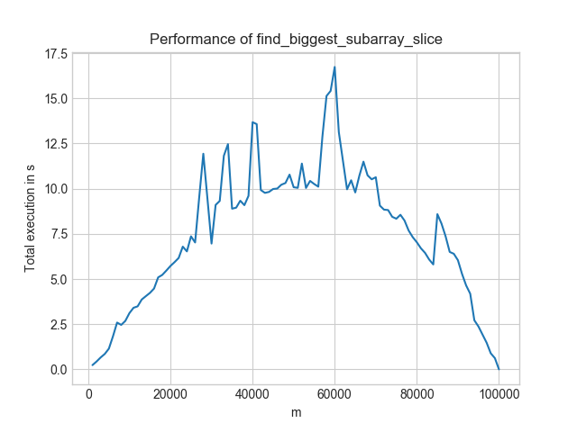
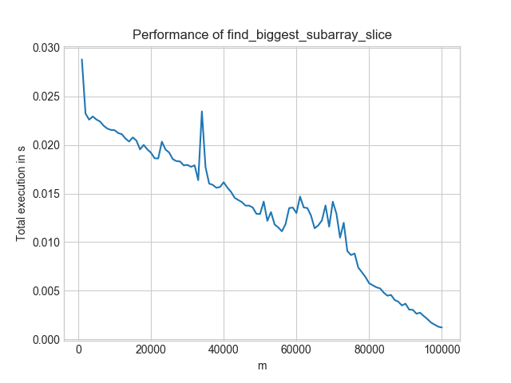

I recently taught a course about improving code for performance. An obvious performance improvement is to not execute unnecessary operations. I lacked a good example when I gave the course, but here is one: Find the value of the largest contiguous sub-array of fixed length in a huge array.
This is a toy example, of course, but it shows the idea quite well.
The Code is on GitHub.
Small Example
Input:
- array: [7, 9, 2, 0, 5, 2, 0, 1, 1, 2]
- sub-array length m = 3
Contiguous sub-arrays of the given length:
[7, 9, 2], value = 18[9, 2, 0], value = 11[2, 0, 5], value = 7[0, 5, 2], value = 7[5, 2, 0], value = 7[2, 0, 1], value = 3[0, 1, 1], value = 2[1, 1, 2], value = 4
Output: 18
Inefficient Solution
The following solution makes use of the slicing notation. It is short, easy to read and mostly pretty efficient:
from typing import List
def find_biggest_subarray_slice(array: List[int], m: int) -> int:
return max(sum(array[i : i + m]) for i in range(len(array) - m + 1))
Except that it has one flaw: It makes too many additions and accesses list elements way more often than necessary.
Efficient Solution
from typing import List
def find_biggest_subarray_iterative(array: List[int], m: int) -> int:
value = sum(array[0:m])
largest_sub_array = value
for remove, add in zip(array, array[m:]):
value = value - remove + add
largest_sub_array = max(value, largest_sub_array)
return largest_sub_array
Comparison
The inefficient solution is in \(\mathcal{O}((n - m) \cdot m)\), the efficient one is in \(\mathcal{O}(n - m)\). So you will notice the difference clearly when you compare the execution times with big \(m\).
The inefficient solution changes its execution time as shown in the image below for increasing m and constant n = 100,000:
{kind=link}

In contrast, the efficient solution looks like this:
{kind=link}

Three things to notice:
- Worst-Case: For the inefficient solution, it is \(m = n/2\). For the efficient solution, it is \(m = 1\).
- Level: The efficient solution is always below 0.03s. The inefficient one is only for the best-case scenario (\(n=m\)) below that. And even then, the efficient solution is at 0.0008s whereas the inefficient one is at 0.001s.
- Speed-ups: If you look at \(m = 60,000\), the more efficient solution gives a 1000× speedup!